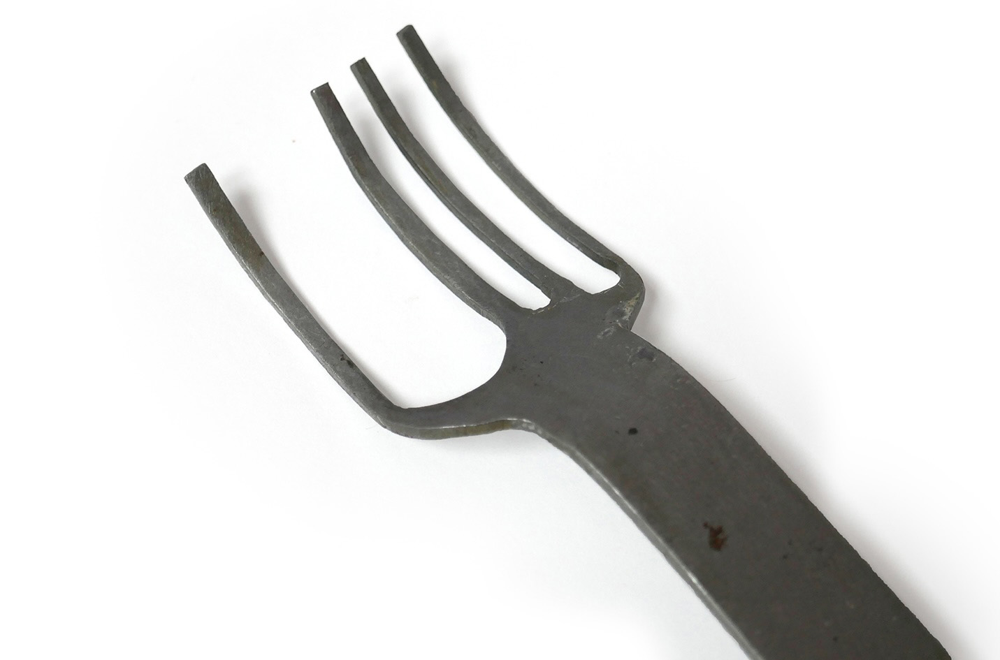
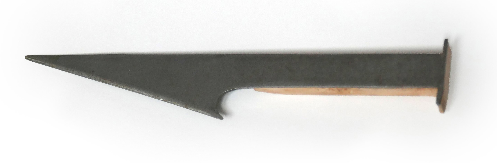
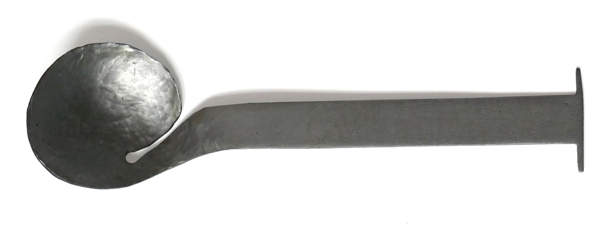
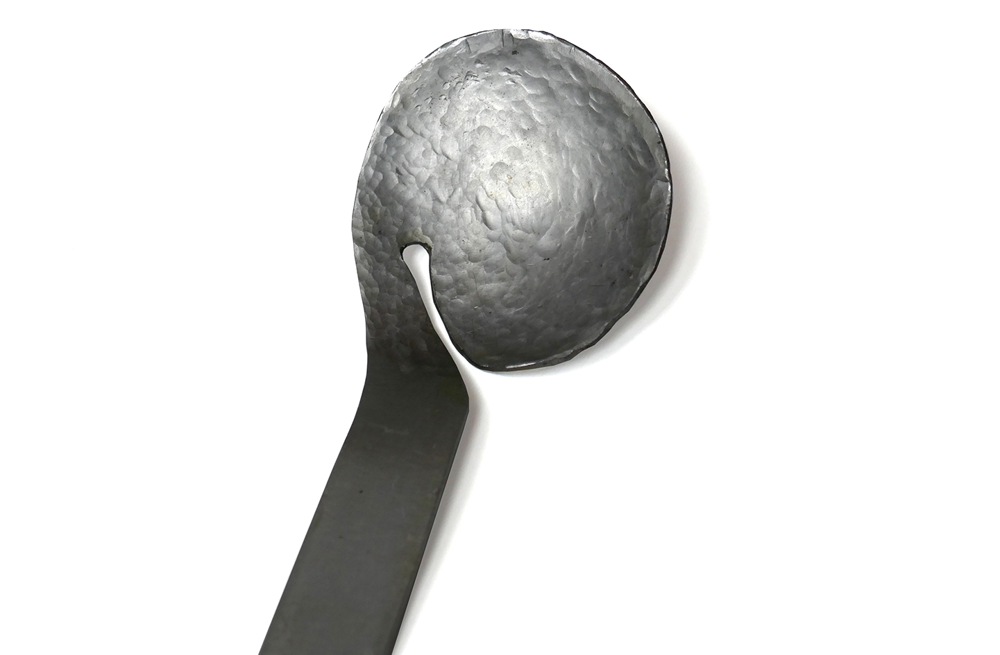
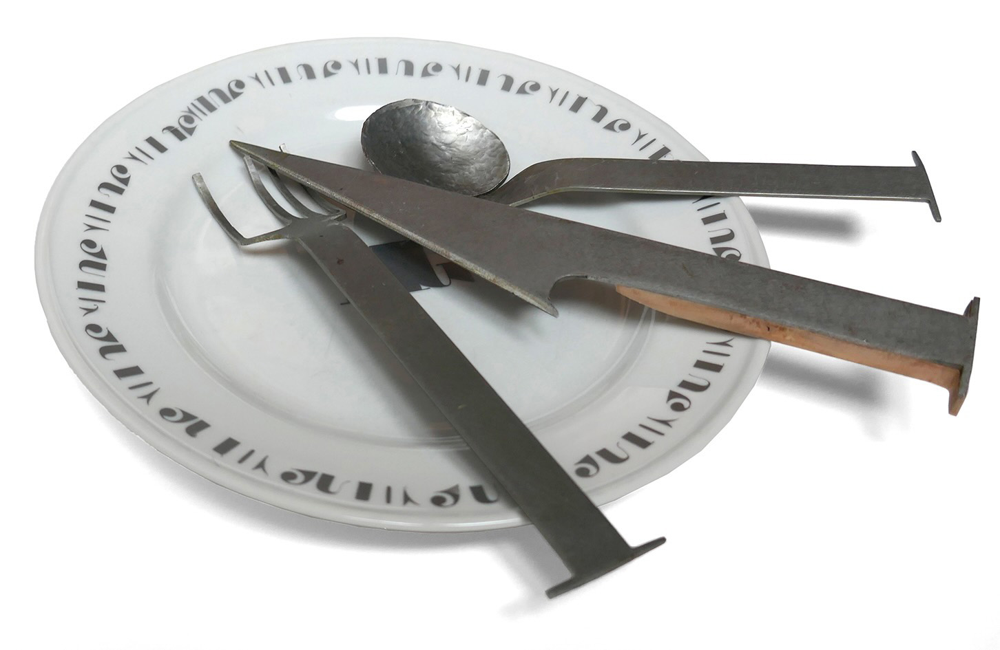
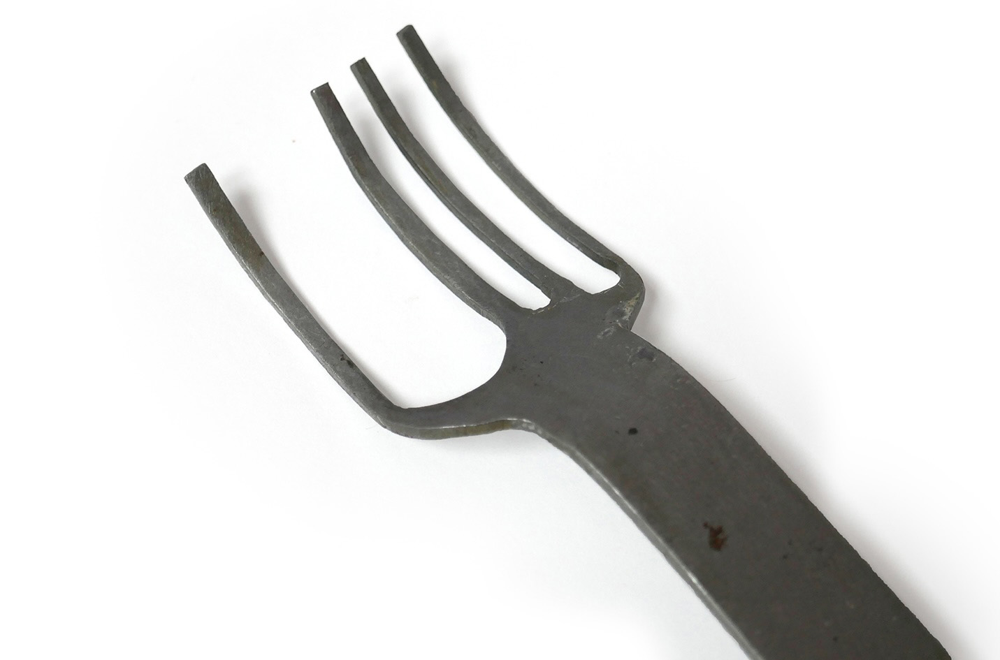
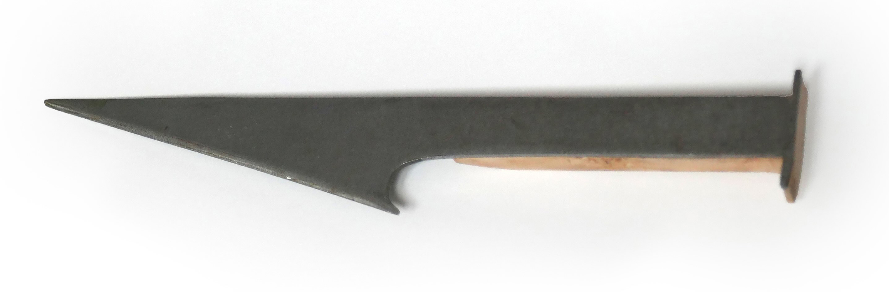
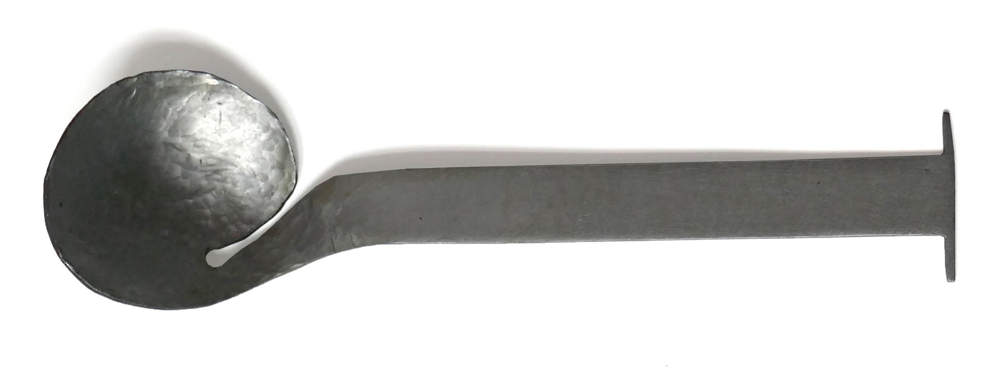
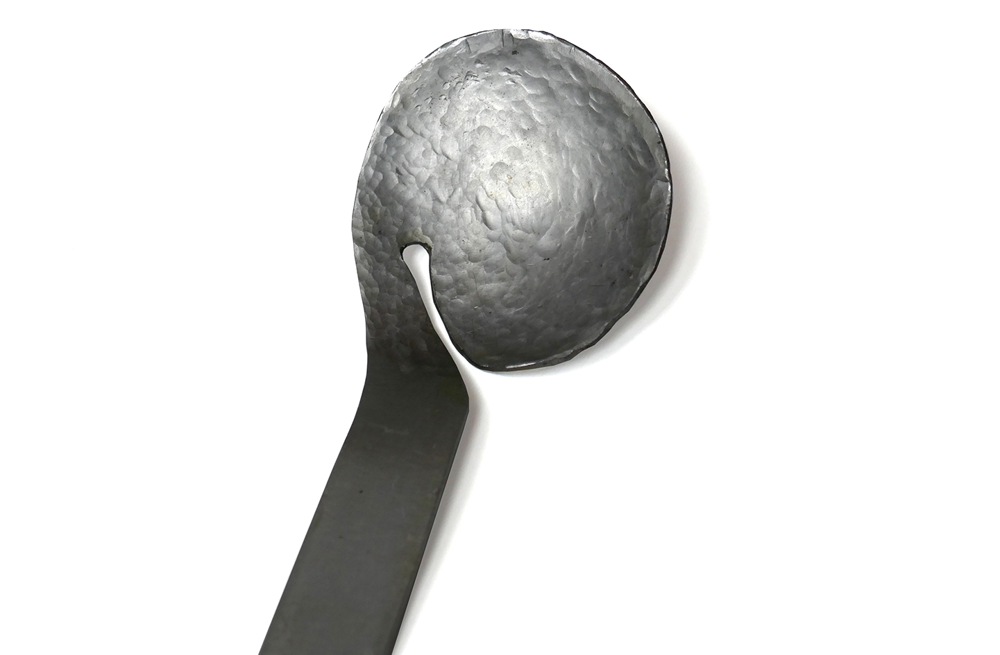
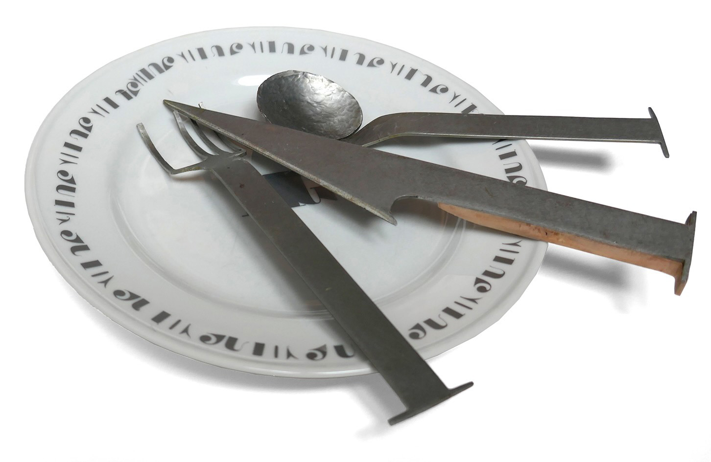

Dressage type
Extraction des spécificités graphiques de la typographie Trianon Normande de Loïc Sander distribuée par Production Type. Chaque couvert en représente une. Les manches permettent de créer l'assortiment entre les trois. L'assiette présente ces formes en décoration comme sur les assiette en faïence.
Pour voir les recherches liées à ces couverts cliquez ici
 








